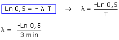
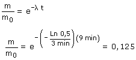

Ecuación de desintegración en función de la masa:

Calculamos la constante de desintegración


Vamos a justificar el resultado:
Cada 3 minutos que pasan, la cantidad de sustancia radioactiva se reduce a la mitad, por tanto la cantidad de sustancia restante será:
100% (0 min), 50% (3 min), 25% (6 min), 12.5% (9 min)
Efectivamente al cabo de 9 minutos quedará un 12.5% de la cantidad inicial